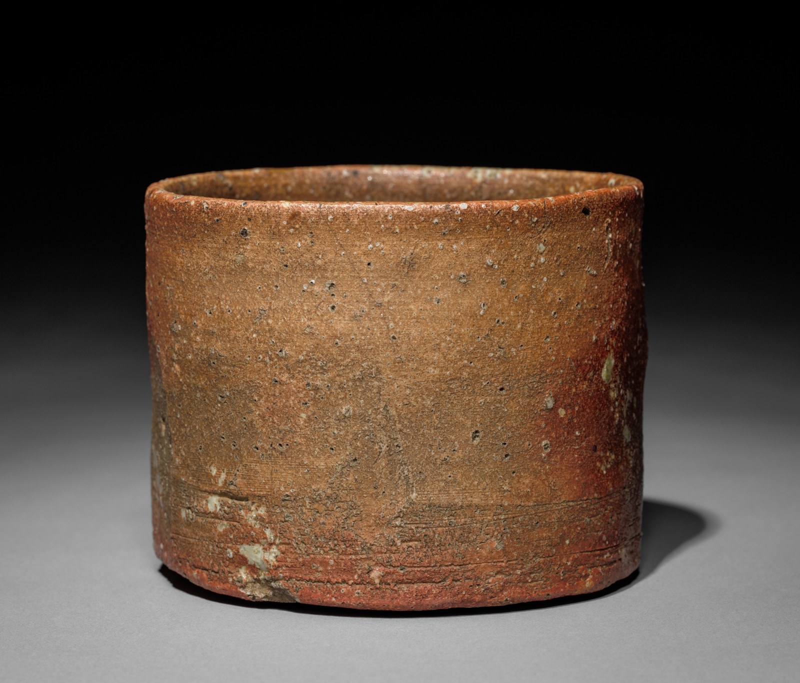

there is the weight in the palm,
the rim at the lips, the character of the glaze.
These, too, shape the moment.
01A vessel for a moment of tea
Beyond the steam, there is more than tea. There is the slight weight as we lift the vessel, its foot beneath a thumb, the thickness of the rim at our lips. What we had only looked at suddenly becomes more intimate through touch.
Whether it is an everyday teacup or a tea bowl brought out for a more formal occasion, a vessel does more than hold a drink. It seems to quietly guide the pace at which we sip, the way we sit, and the pauses in conversation.
A vessel is not merely a backdrop to tea.
It is another presence,
taking part in the moment.
02Finding beauty in variation
Uniformity is not always a condition of beauty. Shades of color that emerge in firing, small irregularities left by a hand, subtle changes that come with years of use: these offer a pleasure different from simply contemplating a finished form.
Yet we should be careful about gathering these impressions into a single idea of what is Japanese. Preferences in vessels and ways of drinking tea differ across times, places, and people. Rather than offering one answer, this essay looks at the individual relationships that emerge as we choose and use a vessel.

Explore the collection record ↗ / The Cleveland Museum of Art, Open Access (CC0)
03The moment begins with choosing
When choosing a vessel, function need not be our only consideration. A color we would like to see in morning light, the reassurance of its shape in the hand, how it sits beside a seasonal sweet. These small choices come together to make a moment of tea our own.
This is why a vessel's life does not end on a shelf. It is used, washed, and sometimes put away. Through this repetition, it gradually gathers the memories of everyday life.
04Between tea and the vessel
Drinking tea is not only a matter of taste. It is also an act of holding, looking, and pausing for a while. When we turn our attention to the vessel, we may discover a richness in an ordinary cup of tea that we have not yet found a name for.
Photographs and collection information
- Red Raku Tea Bowl, in the style of Hon'ami Koetsu (unknown potter), Japan, 18th century. Accession 36.120.525. The Howard Mansfield Collection, Gift of Howard Mansfield, 1936.
- Tea Bowl (Shigaraki ware), Japan, 1600s. Stoneware with natural ash glaze. The Cleveland Museum of Art, accession 1976.25. Gift of Seibei Yamaoka.
Photographs: The Metropolitan Museum of Art (Red Raku bowl) and The Cleveland Museum of Art (Shigaraki bowl). Both museums release these images as Public Domain under CC0. Object information follows their collection records. The Shigaraki image was resized and compressed only, without cropping, color changes, or generative alterations. Terms of use ↗ / Cleveland Open Access ↗